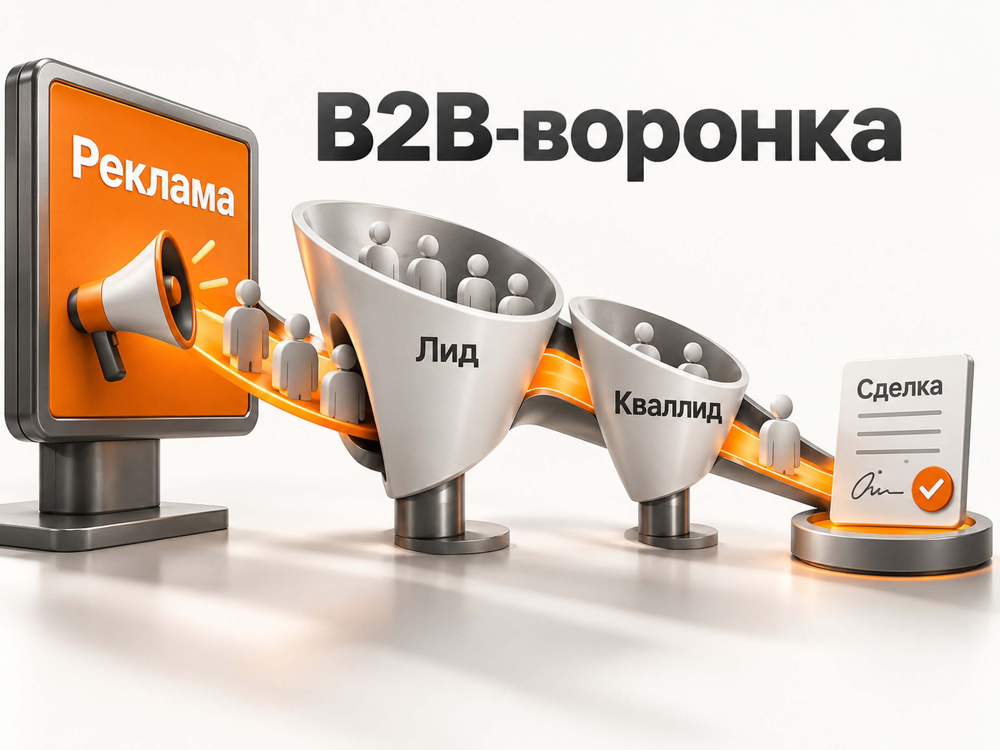
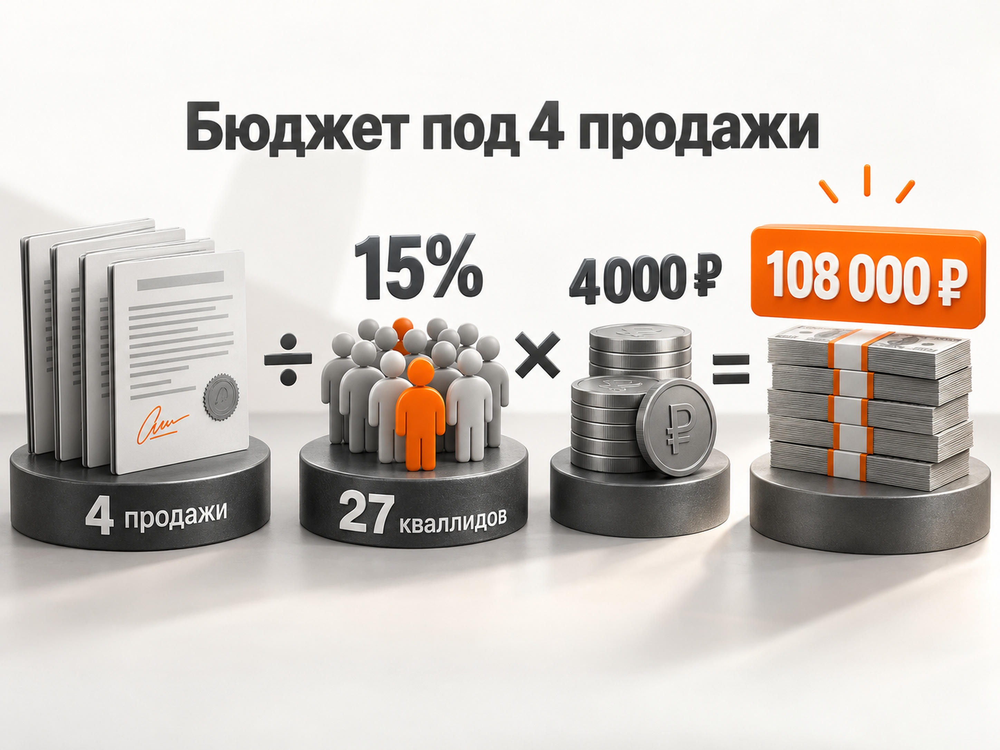
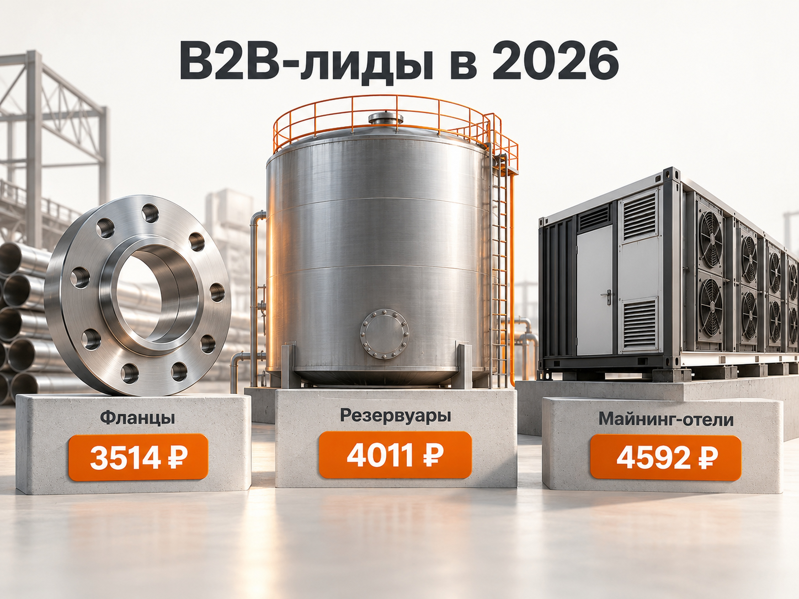

Блог о платном трафике
Как продвигать B2B-компанию и прогнозировать рекламу
Продвижение B2B-компании лучше начинать не с выбора рекламного канала, а с трех вещей: кто именно покупает продукт, как этот человек или компания ищет решение и сколько бизнес может заплатить за нового клиента.
Для B2B особенно важна вся цепочка:
реклама -> обращение -> квалифицированный лид -> коммерческое предложение -> сделка.
Дешевая заявка сама по себе ничего не говорит об эффективности рекламы. Лид может оказаться физлицом вместо компании, слишком маленьким заказчиком, поставщиком, соискателем или просто человеком, который сравнивает цены.
Поэтому в B2B Яндекс Директ часто становится одним из первых платных каналов, но оценивать его нужно не только по CPL. Главные показатели - стоимость квалифицированного лида и стоимость реального клиента.
Свежих российских данных за 2025-2026 годы уже достаточно, чтобы увидеть рабочие закономерности. При этом данные сильно различаются между промышленным оборудованием, оптовыми товарами, IT и профессиональными услугами. Универсального показателя вроде «нормальный лид в B2B стоит 3000 рублей» не существует.
Что показывают свежие B2B-кейсы
Ниже несколько опубликованных результатов Яндекс Директа. Их нельзя считать средними значениями рынка - это конкретные проекты со своей географией, продуктом, сайтом и спросом.
| Ниша | Период | Опубликованный результат |
|---|---|---|
| Промышленные фланцы | декабрь 2025 - февраль 2026 | 196 829 ₽ расходов, 74 реальных обращения, 56 квалифицированных. Квалификация около 76%, стоимость квалифицированного лида - 3514 ₽. |
| Стальные резервуары | ноябрь 2025 - май 2026 | 613 811 ₽ расходов, 222 контакта, 153 квалифицированных лида. Доля квалифицированных - 69%, стоимость - 4011 ₽. |
| Строительство майнинг-отелей | январь - май 2026 | 371 974 ₽ расходов, 96 лидов, из них 81 целевой. Стоимость целевого лида - 4592 ₽. |
| Газовое оборудование | февраль - март 2026 | 114 881 ₽ расходов, 57 лидов по 2015 ₽. Квалификация около 65%. Расчетная стоимость квалифицированного лида получается примерно 3100 ₽. |
В этих четырех примерах квалифицированный B2B-лид обходился примерно в 3100-4600 ₽. Но это не «средний CPL по B2B». Все примеры относятся в основном к производству, промышленным товарам и сложным инфраструктурным продуктам.
В другом B2B-сегменте экономика может отличаться в несколько раз. Например, стоимость обращения в корпоративную IT-систему и стоимость оптовой заявки на стандартный товар нельзя сравнивать напрямую.
Свежие кейсы показывают другое: для B2B вполне реально получать лиды из Яндекс Директа, но в отчетах необходимо отделять техническую конверсию от реального обращения и реальное обращение от квалифицированного лида.

Сначала определите, кого именно нужно привлечь
Формулировки вроде «наш клиент - бизнес» недостаточно.
Для рекламы нужно определить хотя бы:
- отрасль компании;
- размер бизнеса;
- географию;
- тип продукта или задачи;
- минимальный объем заказа;
- примерный бюджет клиента;
- кто участвует в выборе поставщика;
- по каким причинам обращение считается нецелевым.
Для производителя оборудования целевым клиентом может быть завод с конкретной технической задачей. Для оптового поставщика - магазин или сеть с минимальной партией. Для IT-интегратора - компания определенного размера, которой требуется автоматизация конкретного процесса.
Чем точнее это определено, тем проще строить семантику, сайт и рекламные объявления.
Изучите, как сформирован спрос
У B2B можно встретить принципиально разные ситуации.
Первая - сформированный прямой спрос. Люди уже ищут конкретный продукт или поставщика.
Например:
фланец ДУ50 ГОСТ
промышленный станок купить
LED светильники оптом
автоматизация HR процессов
В свежем кейсе промышленного производителя наиболее ценными оказались не широкие запросы вроде «купить фланцы», а технические формулировки с диаметром, материалом и ГОСТ. Именно профессиональная лексика помогла отделить снабженцев и промышленность от розничных покупателей.
Вторая ситуация - прямого спроса мало, но есть смежный спрос.
Например, человек еще не ищет конкретную услугу, но уже ищет решение проблемы, технологию, оборудование или способ инвестирования. В кейсе строительства майнинг-отелей реклама работала как с прямым спросом, так и со смежными запросами вокруг газовой генерации и инвестиций в майнинг.
Поэтому перед запуском нужно открыть Вордстат, собрать реальные варианты спроса и понять его объем. Иногда весь горячий B2B-спрос можно практически полностью охватить небольшим бюджетом. Тогда дальнейший рост придется искать уже за пределами очевидных коммерческих запросов.
Сайт должен помогать выбрать поставщика
В B2B рекламировать общий корпоративный сайт со стандартными блоками «О компании», «Наши преимущества» и «Контакты» часто недостаточно.
Страница должна отвечать на вопросы, которые возникают именно при выборе поставщика:
- что конкретно компания производит или делает;
- с какими задачами работает;
- для каких компаний подходит продукт;
- технические характеристики;
- география поставок;
- минимальные партии;
- сроки;
- производство и оборудование;
- сертификаты и лицензии;
- выполненные проекты;
- клиенты;
- гарантии и сервис;
- как получить расчет или коммерческое предложение.
В опубликованном кейсе производителя резервуаров на посадочную добавили фотографии производства, сертификаты, лицензии, карту реализованных объектов и примеры работ. Дополнительно появился материал для посетителей, которые еще не готовы сразу отправлять техническое задание.
В B2B сайт нужен не только для получения формы. Он должен снижать неопределенность перед следующим этапом сделки.
Яндекс Директ для продвижения B2B
Яндекс Директ особенно полезен там, где часть аудитории уже самостоятельно ищет продукт или решение.
Современная Единая перфоманс-кампания позволяет работать с Поиском, РСЯ и другими площадками, а на уровне групп использовать ключевые фразы, автотаргетинг, интересы и привычки и сегменты аудитории.
Но наличие всех инструментов в одном типе кампании не означает, что их нужно сразу смешивать.
Для B2B важнее сохранить понятную структуру и видеть, откуда приходят качественные обращения.
Поиск
С поиска разумно начинать, если уже существует сформированный спрос.
Семантику стоит разделить по смыслу:
Прямой коммерческий спрос
Запросы непосредственно на товар, услугу или поставщика.
Технический спрос
Модели, артикулы, ГОСТ, характеристики, размеры, технологии, материалы.
Для промышленного B2B такие запросы иногда оказываются ценнее очевидных слов «купить» и «цена».
Проблемный спрос
Человек ищет не конкретный продукт, а решение задачи.
Смежный спрос
Запрос еще не обозначает прямое намерение заказать продукт, но показывает потенциальную потребность.
После запуска обязательно анализировать не только ключевые фразы, но и реальные поисковые запросы. В самом Директе для этого есть отдельный отчет, из которого нерелевантные формулировки можно сразу переносить в минус-фразы.
Объявление должно фильтровать аудиторию
В массовой рекламе обычно стараются получить больше кликов. В B2B лишний клик может быть просто расходом.
Если продукт предназначен только для бизнеса, это стоит показывать непосредственно в объявлении:
Для производств
Оптовые поставки
Партии от 100 шт.
Проектирование под ТЗ
Оборудование для предприятий
Так часть неподходящей аудитории отсеивается еще до перехода на сайт.
В кейсе строительства майнинг-отелей объявления специально сразу объясняли, что речь идет о строительстве промышленного объекта, а не о покупке оборудования для домашнего майнинга.
РСЯ
РСЯ особенно интересна в двух ситуациях:
- Прямого поискового спроса недостаточно для нужного количества лидов.
- Цикл сделки длинный и потенциального клиента нужно возвращать после первого посещения сайта.
В сетях можно использовать ключевые фразы, краткосрочные интересы и привычки и собственные сегменты аудитории. Яндекс указывает, что интересы и привычки в Директе отражают недавнее поведение пользователя и используются именно в сетях.
Для B2B я бы не оценивал РСЯ только по дешевизне заявки. В первую очередь нужно сравнивать качество обращений с Поиском.
Если одна кампания приводит лид за 2500 ₽ с квалификацией 20%, а другая за 4500 ₽ с квалификацией 80%, второй источник фактически выгоднее.
Не дробите узкий B2B на десятки кампаний
Одна из типичных ошибок - сделать отдельные кампании под каждый продукт, регион, тип аудитории и небольшую группу запросов.
В итоге каждая получает слишком мало данных.
Для стратегии «Максимум конверсий» Яндекс указывает минимальный ориентир - около 10 конверсий в неделю по выбранной цели. Если их меньше, обучение становится сложнее.
Поэтому при небольшом спросе структура должна быть достаточно компактной.
Если несколько похожих кампаний по отдельности не набирают статистику, Яндекс также позволяет объединять их в пакетную стратегию, чтобы использовать общие данные для обучения.
Подробно эту тему я разбирал отдельно в материале «Какую стратегию выбрать в Яндекс Директ».
Главная аналитика B2B находится после заявки
Предположим, рекламный кабинет показывает:
100 лидов по 2000 ₽.
На первый взгляд результат понятен - потрачено 200 000 ₽.
Но после проверки отдела продаж может оказаться:
100 лидов -> 50 квалифицированных -> 15 коммерческих предложений -> 5 продаж.
Тогда реальная экономика уже выглядит иначе:
- CPL - 2000 ₽;
- стоимость квалифицированного лида - 4000 ₽;
- стоимость продажи - 40 000 ₽.
Именно эти показатели нужно сравнивать с маржой и допустимой стоимостью привлечения клиента.
Статус лида желательно возвращать из CRM обратно в аналитику.
Яндекс позволяет передавать офлайн-конверсии и использовать их как для отчетов, так и для оптимизации рекламы. Это могут быть события, которые произошли уже после заявки на сайте.
Отдельно можно передавать только проверенные менеджером звонки и заявки. В документации Яндекса такие обращения прямо описываются как квалифицированные лиды.
Подробная настройка разобрана в материале «Офлайн-конверсии в Яндекс Директ и Метрике».
Сколько стоит продвижение B2B-компании
Единой стоимости нет.
Даже четыре свежих промышленных кейса выше дали заметно различающиеся показатели. А при переходе от оборудования к IT, консалтингу, логистике или оптовой торговле изменятся спрос, CPC, конверсия сайта, доля квалифицированных лидов и конверсия отдела продаж.
Поэтому бюджет нужно считать от конечной сделки назад.
Формула:
Количество квалифицированных лидов = план продаж / конверсия квалифицированного лида в продажу
Затем:
Рекламный бюджет = количество квалифицированных лидов × допустимая стоимость квалифицированного лида
Пример расчета
Допустим, компания хочет получать 4 новых договора в месяц.
По собственной CRM она знает, что в сделку превращаются 15% квалифицированных лидов.
Тогда:
4 / 15% = 26,7
Нужно примерно 27 квалифицированных лидов.
Для расчетного примера возьмем CPQL 4000 ₽. Эта цифра находится внутри результатов нескольких свежих промышленных кейсов, но используется здесь только как пример, а не как норматив рынка.
Получаем:
27 × 4000 ₽ = 108 000 ₽
Рабочий рекламный бюджет - примерно 108 000 ₽ в месяц.
Если фактическая конверсия отдела продаж окажется ниже или квалифицированный лид будет стоить дороже, необходимый бюджет вырастет.
Поэтому правильный прогноз для конкретной B2B-компании требует минимум четырех значений:
план продаж + конверсия в продажу + допустимый CAC + прогноз стоимости квалифицированного лида.
Без них разговор о бюджете превращается в угадывание.

Как определить допустимую стоимость лида
Можно считать и в обратную сторону.
Допустимая стоимость квалифицированного лида зависит от того, сколько компания готова заплатить за клиента.
Формула:
Допустимый CPQL = допустимый CAC × конверсия квалифицированного лида в продажу
Например, компания готова тратить на привлечение одного нового клиента до 30 000 ₽.
Если из квалифицированных лидов в продажу переходит 15%:
30 000 ₽ × 15% = 4500 ₽
Значит, квалифицированный лид должен обходиться примерно до 4500 ₽.
Такой подход значительно полезнее, чем искать в интернете ответ на вопрос «сколько должен стоить лид в B2B».
Что делать, если продаж пока мало
В высокочековом B2B сделок может быть слишком мало, чтобы обучать рекламу непосредственно на них.
Тогда нужно разделять аналитику и оптимизацию.
Для бизнес-аналитики конечным KPI остается продажа.
Для алгоритма Директа временно можно использовать более частое событие:
заявка -> квалифицированная заявка -> запрос КП -> встреча -> договор.
Оптимизироваться нужно на максимально глубоком этапе, который при этом набирает достаточно данных.
Если квалифицированных лидов приходит всего несколько в месяц, делать единственной целью стратегии именно их может быть слишком рано.
Какие еще каналы нужны B2B-компании
Яндекс Директ хорошо собирает уже существующий спрос, но он не может создать бесконечный объем запросов.
Поэтому после работы с горячим спросом обычно имеет смысл развивать два направления.
Первое - SEO и экспертный контент.
Потенциальный клиент может искать не поставщика, а характеристики оборудования, сравнение технологий, решение проблемы, нормативы или примеры внедрения. Такие страницы создают дополнительные точки входа из поиска и одновременно помогают человеку проверить компетенции компании.
Второе - повторная работа с уже знакомой аудиторией.
Это ретаргетинг, база клиентов, отраслевые мероприятия, полезные материалы и другие контакты, которые возвращают потенциального заказчика в длинной B2B-воронке.
В кейсе корпоративной HR-платформы с циклом сделки до 6-12 месяцев использовались Поиск, РСЯ, ретаргетинг и дополнительные касания. Сам кейс описывает более старый период рекламной статистики, поэтому его цифры нельзя использовать как ориентир стоимости лида 2026 года, но он хорошо показывает механику длинного цикла принятия решения.
Основные ошибки при продвижении B2B
Считать все заявки одинаковыми.
Главная ошибка. Нужно минимум деление на обычный и квалифицированный лид.
Запускать рекламу до анализа спроса.
Если прямых запросов всего несколько десятков или сотен в месяц, рекламный бюджет нельзя масштабировать как в массовой B2C-нише.
Использовать слишком широкую семантику.
Она может привести физлиц, студентов, соискателей, поставщиков и компании, которым продукт не подходит.
Показывать одинаковое предложение всем сегментам.
Оптовику, производству и интегратору могут быть нужны совершенно разные аргументы.
Раздробить небольшой объем конверсий.
Десять кампаний с несколькими заявками в каждой дают алгоритмам меньше полезных данных, чем компактная структура.
Оптимизироваться на случайные микроконверсии.
Любая часто достигаемая цель не обязательно полезна. Алгоритм будет искать именно тех пользователей, которые выполняют выбранное действие.
Не передавать рекламщику качество лидов.
Без данных отдела продаж можно хорошо оптимизировать рекламу под дешевые, но бесполезные формы.
Если проблема уже появилась, отдельно стоит проверить причины нецелевых и некачественных лидов из Яндекс Директа.
Пошаговая схема продвижения B2B-компании
- Определить целевые типы компаний и критерии квалифицированного лида.
- Посчитать экономику сделки и допустимый CAC.
- Изучить прямой, технический, проблемный и смежный спрос.
- Оценить его объем через Вордстат.
- Подготовить отдельные посадочные под действительно разные направления.
- Настроить Метрику, звонки, формы и передачу статусов из CRM.
- Запустить в первую очередь наиболее сформированный спрос на Поиске.
- Анализировать реальные поисковые запросы и качество лидов.
- Подключать РСЯ, ретаргетинг и дополнительные аудитории там, где Поиска недостаточно.
- Оптимизировать кампании не по количеству форм, а по стоимости квалифицированного лида и клиента.
- После накопления статистики пересчитать прогноз и масштабировать только работающие направления.
Какой результат разумно прогнозировать
Для B2B нельзя заранее по одному названию отрасли обещать определенное количество лидов.
Нормальный прогноз строится после анализа конкретного спроса и воронки.
Свежие кейсы промышленного B2B показывают, что Яндекс Директ способен приводить квалифицированные обращения по несколько тысяч рублей даже для продуктов стоимостью в миллионы рублей. В рассмотренных проектах встречалась стоимость квалифицированного лида примерно от 3100 до 4600 ₽. Но переносить этот диапазон на любую B2B-компанию нельзя.
Для конкретного бизнеса прогноз должен отвечать на другие вопросы:
сколько существует подходящего спроса, сколько стоит его выкупить, какая доля обращений квалифицируется, сколько квалифицированных лидов превращаются в продажи и какой CAC выдерживает экономика компании.
После этого Яндекс Директ становится не просто источником заявок, а управляемой частью B2B-воронки.
